Millimeter-wave radar provides perception robust to fog, smoke, dust, and low light, making it attractive for size, weight, and power constrained robotic platforms. Current radar imaging methods, however, rely on synthetic aperture or multi-frame aggregation to improve resolution, which is impractical for small aerial, inspection, or wearable systems.
We present RadarSFD, a conditional latent diffusion framework that reconstructs dense LiDAR-like point clouds from a single radar frame without motion or SAR. Our approach transfers geometric priors from a pretrained monocular depth estimator into the diffusion backbone, anchors them to radar inputs via channel-wise latent concatenation, and regularizes outputs with a dual-space objective combining latent and pixel-space losses.
On the RadarHD benchmark, RadarSFD achieves SOTA performance against baseline models. Qualitative results show recovery of fine walls and narrow gaps, and experiments across new environments confirm strong generalization. Ablation studies highlight the importance of pretrained initialization, radar BEV conditioning, and the dual-space loss. Together, these results establish the practical single-frame, no-SAR mmWave radar pipeline for dense point cloud perception in compact robotic systems.
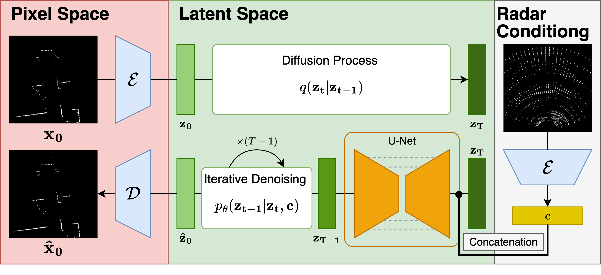
RadarSFD takes a single radar Range-Azimuth BEV and reconstructs a dense LiDAR-like point cloud through a conditional latent diffusion pipeline. Radar and LiDAR BEV images are first encoded into latent space. The radar latent c is concatenated with the noisy LiDAR latent zt and passed into a pretrained U-Net denoiser. After iterative denoising, the decoder reconstructs a LiDAR-like point cloud with sharp geometry from a single radar frame.
| Method | # Frames | Mean CD ↓ | Mean MHD ↓ |
|---|---|---|---|
| CFAR | 1 | 0.84 | 0.91 |
| RadarHD | 41 | 0.44 | 0.34 |
| RadarHD single-frame | 1 | 0.56 | 0.45 |
| Luan et al. | 5 | 0.59 | 0.50 |
| Zhang et al. | 1 | 0.38 | 0.29 |
| RadarSFD (Ours) | 1 | 0.35 | 0.28 |
RadarSFD achieves the best single-frame performance on the RadarHD dataset, improving over Luan et al. (ICRA 2024) and Zhang et al. (RA-L 2024).
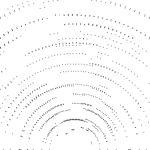
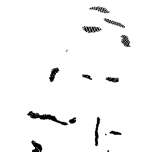
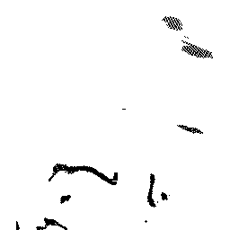
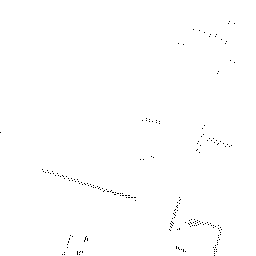
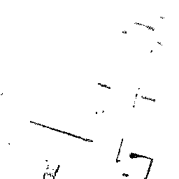
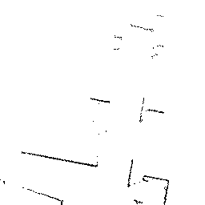
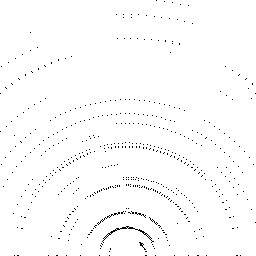
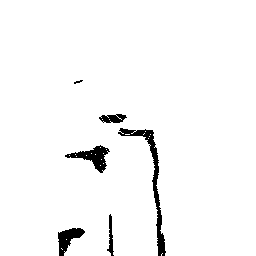
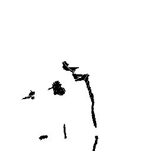
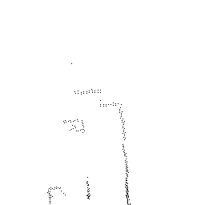
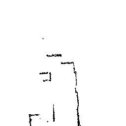
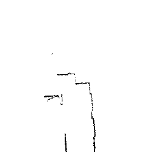
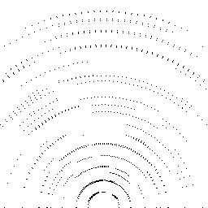
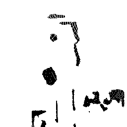
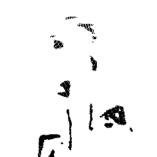
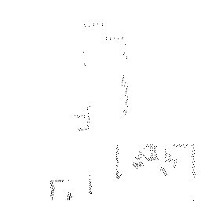
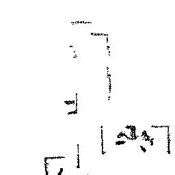
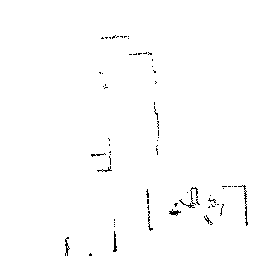
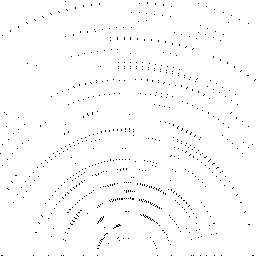
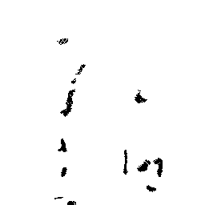
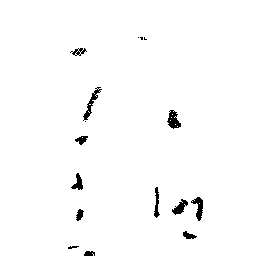
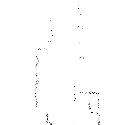
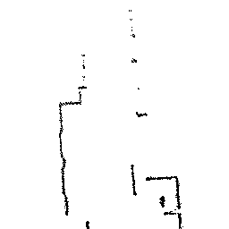
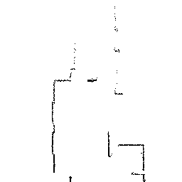
Qualitative comparison of point cloud reconstructions on four representative scenes with varying complexity. All results are shown in Cartesian coordinates for direct comparison.
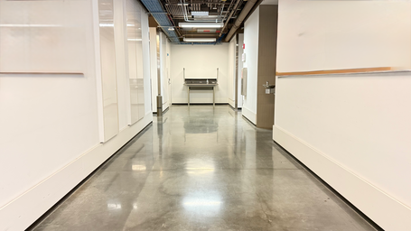
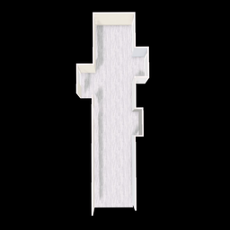
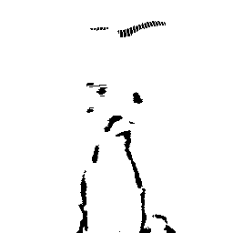
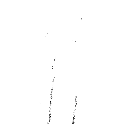
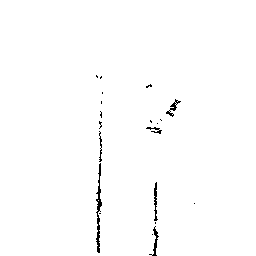
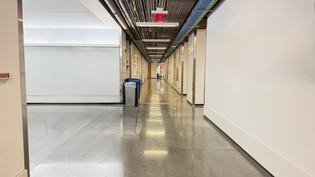
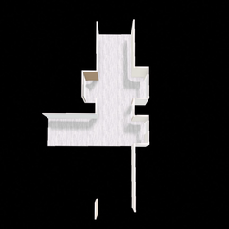
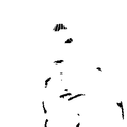
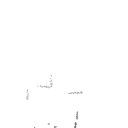
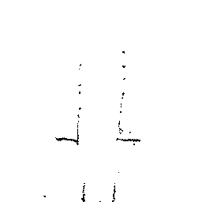
Real-world generalization results on completely unseen scenes from our campus building. All models are trained on the same RadarHD dataset: (a) RGB image of the unseen environment, (b) 3D floor-plan layout, (c) RadarHD single-frame baseline, (d) Zhang et al. (RA-L 2024), and (e) RadarSFD single-frame latent diffusion.
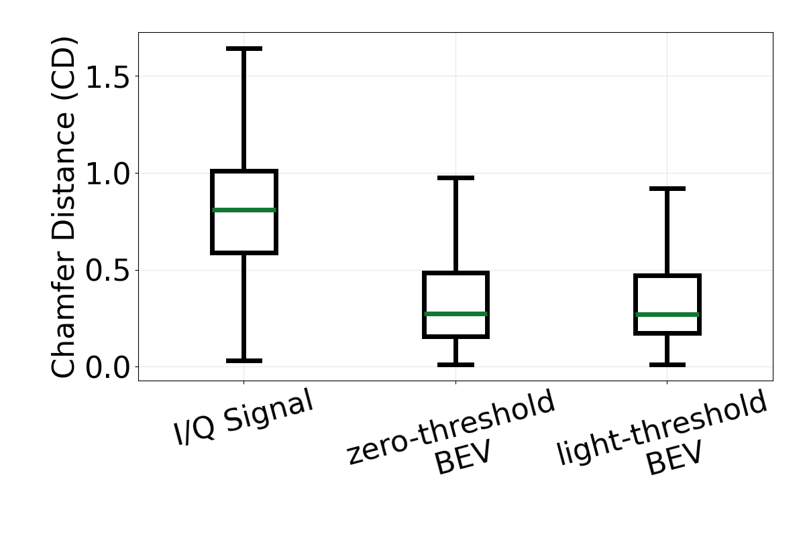
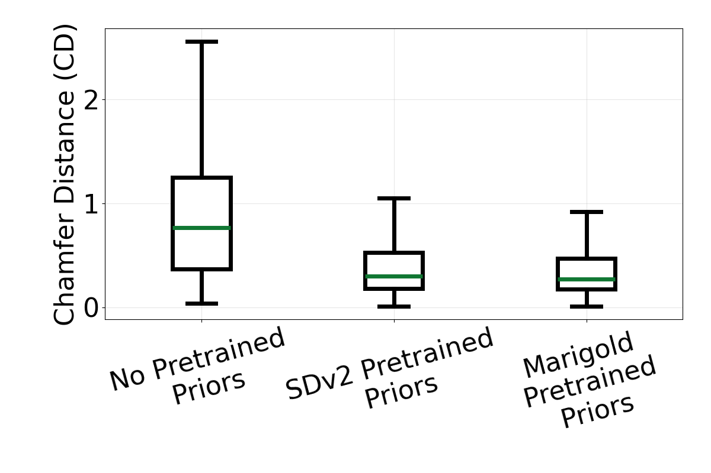
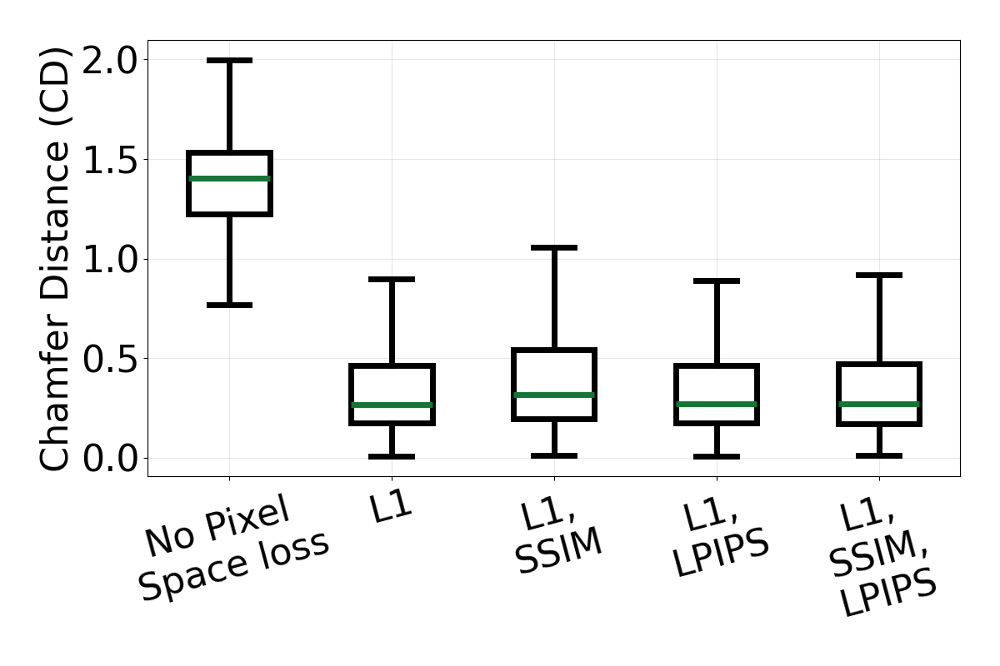
Ablation box plots using Chamfer Distance (CD). From left to right, the plots evaluate input representation, pretrained priors, and training losses.
@inproceedings{zhao2026radarsfd,
title = {RadarSFD: Single-Frame Diffusion with Pretrained Priors for Radar Point Clouds},
author = {Zhao, Bin and Garg, Nakul},
booktitle = {IEEE International Conference on Robotics and Automation (ICRA)},
year = {2026}
}